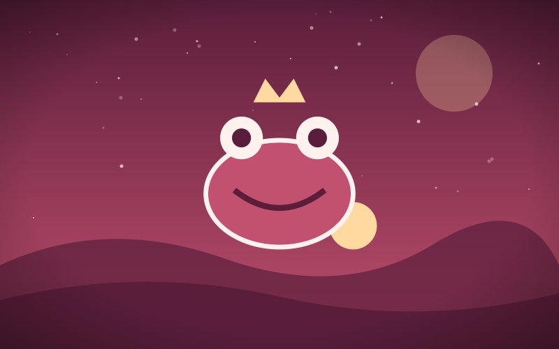

The Lantern Keeper
Genre: Fantasy
Synopsis
On a cliff at the edge of the world, one keeper tends the last lantern that holds back the dark.
Chapter 1: The Last Flame

Mira had kept the Lantern of Harrow Point since her grandmother's hands grew too shaky to trim the wick. Every night she climbed three hundred steps to light it, because the old stories said that when the flame went out, the Hollow Tide would rise from the sea.
Tonight the wind carried a whisper she had never heard before. It spoke her name, slowly, as if it had been waiting a very long time to say it.
She cupped her hands around the flame and answered. Far below, the black water went perfectly still, and something vast turned over in its sleep.